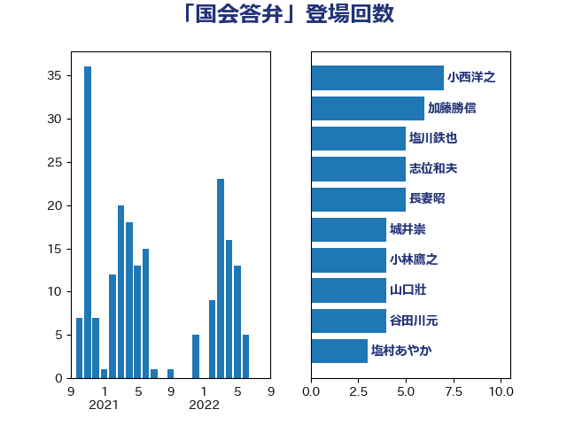

単語「国会答弁」

| 小西洋之 | 立憲民主党 | 7 回 |
| 加藤勝信 | 自由民主党 | 6 回 |
| 塩川鉄也 | 日本共産党 | 5 回 |
| 志位和夫 | 日本共産党 | 5 回 |
| 長妻昭 | 立憲民主党 | 5 回 |
| 城井崇 | 立憲民主党 | 4 回 |
| 小林鷹之 | 自由民主党 | 4 回 |
| 山口壯 | 自由民主党 | 4 回 |
| 谷田川元 | 立憲民主党 | 4 回 |
| 塩村あやか | 立憲民主党 | 3 回 |
| 大西健介 | 立憲民主党 | 3 回 |
| 柚木道義 | 立憲民主党 | 3 回 |
| 菅義偉 | 自由民主党 | 3 回 |
| 足立康史 | 日本維新の会 | 3 回 |
| 野上浩太郎 | 自由民主党 | 3 回 |
| 佐藤英道 | 公明党 | 2 回 |
| 古賀友一郎 | 自由民主党 | 2 回 |
| 塩田博昭 | 公明党 | 2 回 |
| 宮本徹 | 日本共産党 | 2 回 |
| 小沢雅仁 | 立憲民主党 | 2 回 |
| 小沼巧 | 立憲民主党 | 2 回 |
| 山井和則 | 立憲民主党 | 2 回 |
| 山岡達丸 | 立憲民主党 | 2 回 |
| 岡田克也 | 立憲民主党 | 2 回 |
| 徳永エリ | 立憲民主党 | 2 回 |
| 徳永久志 | 立憲民主党 | 2 回 |
| 末松義規 | 立憲民主党 | 2 回 |
| 杉尾秀哉 | 立憲民主党 | 2 回 |
| 枝野幸男 | 立憲民主党 | 2 回 |
| 牧山ひろえ | 立憲民主党 | 2 回 |
| 田島麻衣子 | 立憲民主党 | 2 回 |
| 穀田恵二 | 日本共産党 | 2 回 |
| 笠井亮 | 日本共産党 | 2 回 |
| 鈴木宗男 | 日本維新の会 | 2 回 |
| 階猛 | 立憲民主党 | 2 回 |
| 音喜多駿 | 日本維新の会 | 2 回 |
| 高良鉄美 | 無所属 | 2 回 |
| 三ッ林裕巳 | 自由民主党 | 1 回 |
| 中谷一馬 | 立憲民主党 | 1 回 |
| 丹羽秀樹 | 自由民主党 | 1 回 |
| 井野俊郎 | 自由民主党 | 1 回 |
| 伊佐進一 | 公明党 | 1 回 |
| 伊波洋一 | 無所属 | 1 回 |
| 佐藤正久 | 自由民主党 | 1 回 |
| 佐藤茂樹 | 公明党 | 1 回 |
| 古賀之士 | 立憲民主党 | 1 回 |
| 和田政宗 | 自由民主党 | 1 回 |
| 嘉田由紀子 | 無所属 | 1 回 |
| 大塚耕平 | 国民民主党 | 1 回 |
| 太栄志 | 立憲民主党 | 1 回 |
| 奥野総一郎 | 立憲民主党 | 1 回 |
| 寺田静 | 無所属 | 1 回 |
| 小池晃 | 日本共産党 | 1 回 |
| 小泉進次郎 | 自由民主党 | 1 回 |
| 山下雄平 | 自由民主党 | 1 回 |
| 山岸一生 | 立憲民主党 | 1 回 |
| 岸信夫 | 自由民主党 | 1 回 |
| 後藤祐一 | 立憲民主党 | 1 回 |
| 斎藤嘉隆 | 立憲民主党 | 1 回 |
| 杉田水脈 | 自由民主党 | 1 回 |
| 柳ヶ瀬裕文 | 日本維新の会 | 1 回 |
| 梶山弘志 | 自由民主党 | 1 回 |
| 森山浩行 | 立憲民主党 | 1 回 |
| 武田良太 | 自由民主党 | 1 回 |
| 浜野喜史 | 国民民主党 | 1 回 |
| 片山さつき | 自由民主党 | 1 回 |
| 田名部匡代 | 立憲民主党 | 1 回 |
| 田村まみ | 国民民主党 | 1 回 |
| 田村貴昭 | 日本共産党 | 1 回 |
| 盛山正仁 | 自由民主党 | 1 回 |
| 石橋通宏 | 立憲民主党 | 1 回 |
| 福山哲郎 | 立憲民主党 | 1 回 |
| 福島伸享 | 無所属 | 1 回 |
| 稲田朋美 | 自由民主党 | 1 回 |
| 篠原豪 | 立憲民主党 | 1 回 |
| 緒方林太郎 | 無所属 | 1 回 |
| 芳賀道也 | 国民民主党 | 1 回 |
| 萩生田光一 | 自由民主党 | 1 回 |
| 藤岡隆雄 | 立憲民主党 | 1 回 |
| 衛藤晟一 | 自由民主党 | 1 回 |
| 西村康稔 | 自由民主党 | 1 回 |
| 西銘恒三郎 | 自由民主党 | 1 回 |
| 逢坂誠二 | 立憲民主党 | 1 回 |
| 野田佳彦 | 立憲民主党 | 1 回 |
| 野田国義 | 立憲民主党 | 1 回 |
| 阿部弘樹 | 日本維新の会 | 1 回 |
| 青柳仁士 | 日本維新の会 | 1 回 |
| 高橋千鶴子 | 日本共産党 | 1 回 |